렌더링(Rendering)은 평면적으로 만들어 둔 2D 또는 3D 모형 위에 빛의 방향, 그림자, 색감 등을 입혀 실제 사물처럼 입체감 있게 보이도록 마무리하는 그래픽 기법입니다. 모델링으로 뼈대를 세운 뒤 그 위에 옷을 입히고 화장을 해주는 단계라고 생각하시면 이해가 쉽습니다.
합격 포인트 !
① 모델링(Modeling): 물체의 형태와 뼈대를 잡아주는 작업으로, 렌더링 이전에 진행됩니다.
② 애니메이션(Animation): 정지된 이미지에 움직임을 부여해 동영상처럼 만들어 주는 기법입니다.
③ 리터칭(Retouching): 이미 만들어진 이미지를 보정·수정하여 새로운 느낌으로 바꾸는 작업입니다.
암기 팁: "뼈대는 모델링, 옷 입히기는 렌더링!" 두 단어의 순서로 기억하시면 헷갈리지 않습니다.
mp3는 소리(오디오) 데이터를 다루는 파일 형식입니다. 오디오 파일의 크기는 1초에 몇 번 소리를 떠내는지(표본 추출률), 한 번 떠낼 때 몇 비트로 저장하는지(샘플 크기), 모노/스테레오인지(재생 방식)에 따라 결정됩니다. 반면 ④ 프레임 너비(pixel)는 화면을 구성하는 영상 데이터의 단위로, 오디오 파일인 mp3와는 아무 관련이 없습니다.
합격 포인트 !
오디오 파일 크기 = 표본 추출률 × 샘플 크기 × 채널 수(모노 1, 스테레오 2) × 재생 시간
픽셀(pixel), 프레임 너비, 해상도 등은 모두 영상·이미지 관련 용어입니다.
암기 팁: "소리에는 픽셀이 없다!" 보기에서 영상 관련 단어가 나오면 그게 바로 답입니다.
프록시(Proxy) 서버는 클라이언트와 인터넷 사이에서 중계자 역할을 해주는 서버입니다. 외부의 침입을 막아주는 방화벽 역할과, 자주 접속하는 자료를 임시 저장해 두고 빠르게 보여주는 캐시 역할을 동시에 수행합니다.
합격 포인트 !
프록시 서버 핵심 기능 2가지: ① 방화벽(보안) ② 캐시(속도 향상)
내부 해킹 차단(②)이나 네트워크 병목 해결(④)은 프록시의 주된 기능이 아닙니다.
암기 팁: 프록시 = "중계 + 보안 + 속도 캐시" 세 단어로 기억하세요.
컴퓨터 바이러스는 소프트웨어뿐만 아니라 하드웨어에도 영향을 미칠 수 있습니다. 예를 들어 부트 바이러스는 하드디스크의 부트 영역(MBR)을 손상시키고, 일부 악성 코드는 BIOS나 펌웨어를 공격해 하드웨어를 못 쓰게 만들기도 합니다. 따라서 하드웨어와 무관하다고 설명한 ④번이 옳지 않습니다.
합격 포인트 !
바이러스 분류: 감염 부위 기준 → 부트 바이러스 / 파일 바이러스 / 부트+파일 혼합 바이러스
주요 감염 경로: 불법 복제 소프트웨어, 메일 첨부파일, 인터넷 다운로드 파일 등
암기 팁: "하드웨어는 안전하다"는 보기는 항상 함정입니다!
③번의 "전기 생산부터 소비까지 정보통신 기술을 접목한다"는 설명은 사물인터넷(IoT)이 아니라 스마트 그리드(Smart Grid)에 대한 설명입니다. 사물인터넷은 모든 사물에 센서와 통신 기능을 부여해 인터넷으로 연결하는 기술이므로, 특정 산업(전력)에만 국한된 ③번은 옳지 않은 설명입니다.
합격 포인트 !
사물인터넷(IoT): 사물 + 인터넷 → 모든 사물이 네트워크로 연결되어 정보를 주고받는 환경
스마트 그리드: 전력망 + IT → 전기 생산·송전·소비 전 과정을 효율화하는 지능형 전력망
암기 팁: "전기"가 보이면 IoT가 아니라 스마트 그리드입니다!
A, B, C, D, E 클래스로 주소를 나누는 방식은 IPv6가 아닌 IPv4의 특징입니다. IPv6는 클래스 개념 없이 유니캐스트, 멀티캐스트, 애니캐스트의 세 가지 주소 유형으로 구분합니다.
합격 포인트 !
IPv4: 32비트(8비트 × 4부분), 10진수 표기, A~E 클래스 구분
IPv6: 128비트(16비트 × 8부분), 16진수 콜론(:) 표기, 유니캐스트·멀티캐스트·애니캐스트 3종
암기 팁: 클래스(A,B,C,D,E)가 나오면 무조건 IPv4! IPv6는 클래스 자체가 없습니다.
③번은 프로토콜 부분이 잘못되었습니다. 계정이 있는 FTP에 접속할 때는 http가 아니라 ftp 프로토콜을 사용해야 합니다. 올바른 형식은 'ftp://사용자이름[:비밀번호]@서버이름:포트번호'입니다. 프로토콜은 자원의 종류에 맞게 정확히 사용해야 한다는 점을 꼭 기억하세요.
합격 포인트 !
URL 기본 구조: 프로토콜://호스트주소[:포트번호][/파일경로]
주요 프로토콜: http(웹), https(보안 웹), ftp(파일 전송), mailto(메일), telnet(원격 접속)
암기 팁: 보기에서 "FTP인데 http://"처럼 어색한 조합이 보이면 그게 함정입니다!
프로토콜(Protocol)은 컴퓨터 간 통신을 위한 약속·규약일 뿐입니다. 단말장치를 자동으로 인식하여 호환성을 제공하는 기능은 운영체제의 PnP(Plug & Play)에 해당하며, 프로토콜의 기능이 아닙니다. 프로토콜의 핵심 기능은 흐름 제어, 동기화, 오류 검출, 캡슐화, 주소 지정 등입니다.
합격 포인트 !
프로토콜의 주요 기능: 흐름 제어 / 동기화 / 오류 검출 / 캡슐화 / 주소 지정
PnP(Plug & Play): 새 장치를 자동으로 인식하고 드라이버를 설치해 주는 운영체제 기능
암기 팁: "자동 인식·호환성" 키워드는 프로토콜이 아니라 PnP의 영역입니다!
④번의 "순차적인 처리가 중요시되며 프로그램 전체가 유기적으로 연결되도록 작성한다"는 설명은 객체지향이 아닌 절차지향(Procedural) 프로그래밍 언어의 특징입니다. 객체지향은 데이터와 기능을 "객체"라는 단위로 묶어 독립적으로 다룬다는 점에서 절차지향과 정반대 개념입니다.
합격 포인트 !
객체지향 4대 특징: 상속성, 캡슐화, 추상화, 다형성
대표 객체지향 언어: C++, Java, C#, Python, Smalltalk
절차지향 언어: C, COBOL, FORTRAN, PASCAL → 순차적 처리, 함수 중심
암기 팁: "순차적·유기적 연결"이 나오면 무조건 절차지향입니다!
OLE(Object Linking and Embedding)는 다른 응용 프로그램에서 만든 그림이나 표 등의 개체를 현재 문서에 "연결(Link)" 또는 "포함(Embed)" 시켜 함께 사용할 수 있게 해주는 기능입니다. 예를 들어 한글 문서에 엑셀 표를 삽입하고, 원본 엑셀 파일이 수정되면 한글 문서에도 자동으로 반영되도록 할 수 있죠.
합격 포인트 !
① 선점형 멀티태스크: 운영체제가 응용 프로그램의 CPU 점유 시간을 강제로 제어하는 방식
② GUI: 마우스로 아이콘과 메뉴를 클릭하는 그래픽 사용자 환경
③ PnP: 새 장치를 꽂으면 자동으로 인식·설치해 주는 기능
암기 팁: "개체 연결/포함" 키워드가 보이면 무조건 OLE입니다!
ASCII 코드는 미국에서 만들어진 영문자·숫자·기호 위주의 코드 체계로, 7비트로 128가지만 표현할 수 있어 한글·중국어·일본어 같은 다양한 나라의 언어를 표현하기에는 부족합니다. 전 세계 모든 문자를 표현하기 위해 만들어진 코드는 유니코드(Unicode)입니다.
합격 포인트 !
ASCII: 7비트 → 128자 (영문·숫자·기호 위주, 미국 표준)
확장 ASCII: 8비트 → 256자 (특수문자·도형문자 추가)
유니코드(Unicode): 16비트 이상 → 전 세계 언어를 표현 (한글, 한자, 아랍어 등 포함)
암기 팁: "전 세계 언어"는 유니코드, ASCII는 "영문 위주"!
펌웨어(Firmware)는 하드웨어의 기본 동작을 제어하는 프로그램으로, 비휘발성 메모리(주로 ROM·플래시 메모리)에 저장됩니다. 하드웨어를 교체하지 않고도 펌웨어를 업데이트하는 것만으로 새로운 기능 추가나 성능 향상이 가능하다는 것이 가장 큰 특징입니다.
합격 포인트 !
① 하드 디스크가 아닌 ROM(비휘발성 메모리)에 저장됩니다.
③ 백신과는 무관합니다. 펌웨어는 하드웨어 제어용 프로그램입니다.
④ 펌웨어는 "하드웨어"가 아니라 "소프트웨어"입니다. (하드웨어와 소프트웨어의 중간 성격)
암기 팁: 펌웨어는 "하드웨어 옷을 입은 소프트웨어" → 업데이트로 성능 향상 가능!
칩셋(Chip Set)은 메인보드에 장착된 각 부품들이 서로 원활하게 통신할 수 있도록 데이터 흐름을 제어하고 역할을 조율하는 컨트롤러 역할을 합니다. 메인보드의 두뇌라고 부를 수 있는 핵심 부품입니다.
합격 포인트 !
① 모든 장치가 장착되는 기판 → 메인보드(Main Board)에 대한 설명
③ 데이터 전송 통로 → 버스(Bus)에 대한 설명
④ 주변장치 접속 부분 → 포트(Port) 또는 슬롯(Slot)에 대한 설명
암기 팁: 칩셋 = "메인보드의 교통경찰" → 데이터 흐름을 정리·통제!
SSD(Solid State Drive)는 반도체(플래시 메모리)에 데이터를 저장하는 보조 기억장치입니다. 기계식 회전 부품이 없어 데이터 입출력 속도가 매우 빠르고, 디스크 표면 손상으로 인한 배드섹터가 발생하지 않는다는 장점이 있습니다.
합격 포인트 !
② SSD는 덮어쓰기가 불가능하여 "지우고 다시 쓰기" 과정이 필요하며, 읽기보다 쓰기가 느립니다.
③ 적색 레이저를 사용하는 것은 DVD·CD 같은 광학 디스크입니다.
④ SSD는 부품이 없는 반도체 방식이라 오히려 HDD보다 외부 충격에 강합니다.
암기 팁: SSD = "빠르고, 조용하고, 충격에 강하고, 배드섹터 없음!" 네 가지 장점!
②번의 "실행할 수 없는 명령어가 사용된 경우"는 외부 장치가 아닌 CPU 내부에서 발생하는 내부 인터럽트(트랩)에 해당합니다. 외부 인터럽트는 전원 이상, 입출력 장치, 타이머 등 CPU 바깥에서 발생하는 신호를 말합니다.
합격 포인트 !
외부 인터럽트: 전원 이상, 입출력 장치, 타이머, 기계적 오류 등 → CPU 바깥에서 발생
내부 인터럽트(트랩): 0으로 나누기, Overflow, 잘못된 명령어 실행 등 → CPU 내부에서 발생
소프트웨어 인터럽트: 프로그램이 OS 서비스를 호출할 때 발생 (예: SVC)
암기 팁: "잘못된 명령어"는 CPU 본인의 실수 → 내부 인터럽트!
레지스터(Register)는 CPU 내부에 위치한 가장 빠른 기억 장치로, 명령어나 연산 데이터를 잠깐 저장하기 위한 용도로 사용됩니다. 플립플롭이나 래치 회로로 만들어지며, 모든 기억 장치 중 가장 속도가 빠릅니다.
합격 포인트 !
② 레지스터는 가장 "느린" 것이 아니라 가장 "빠른" 기억장치입니다.
③ 시스템 정보 저장은 CMOS 또는 시스템 레지스트리에 해당하는 설명입니다.
④ 부팅 시 OS가 로딩되는 곳은 주기억장치인 RAM입니다.
기억장치 속도 순: 레지스터 > 캐시 > 주기억장치(RAM) > 보조기억장치(HDD/SSD)
암기 팁: 레지스터는 CPU의 "메모지" → 가장 빠르고 임시 기록용!
NTFS 파일 시스템에서 논리 파티션의 크기는 "제한이 없다"가 아니라 "제한이 있다"가 맞습니다. 이론적으로는 매우 큰 용량까지 지원하지만 실제 운영체제와 디스크 환경에 따라 제한이 있으므로, "제한이 없다"는 표현은 옳지 않습니다.
합격 포인트 !
NTFS: 윈도우 NT 계열의 표준 파일 시스템. 보안·압축·암호화·복구 지원, 큰 용량에 적합
FAT32: 호환성은 좋지만 단일 파일 4GB 제한, 보안 기능 부족
암기 팁: 보기에서 "제한이 없다"는 표현이 보이면 거의 함정! → 어떤 시스템이든 한계는 있습니다.
④번의 "분석 및 디버그 로그 표시"는 [디스크 관리] 메뉴가 아니라 [이벤트 뷰어]에서 제공하는 기능입니다. [디스크 관리]는 볼륨 생성·삭제·확장·축소, 드라이브 문자 변경, 포맷 등 디스크 자체와 관련된 작업에 사용됩니다.
합격 포인트 !
[디스크 관리]에서 가능한 작업: 볼륨 만들기/삭제/확장/축소, 드라이브 문자 변경, 포맷, 활성 파티션 표시
[이벤트 뷰어]: 시스템·응용 프로그램·보안 로그를 조회·분석하는 도구
암기 팁: "로그" 키워드가 나오면 디스크 관리가 아닌 이벤트 뷰어!
폴더의 [속성] 창에서는 폴더 자체의 정보나 설정을 변경하는 기능만 제공합니다. 폴더 안에 들어 있는 파일을 삭제하는 작업은 파일 탐색기에서 파일을 직접 선택해 Delete 키를 눌러야 가능하며, [속성] 창에서는 수행할 수 없습니다.
합격 포인트 !
[속성] 창에서 가능한 작업: 최적화 유형 설정(사용자 지정 탭), 공유·보안 설정, 아이콘 변경, 읽기 전용·숨김 속성 변경
[속성] 창에서 불가능한 작업: 폴더 내부의 파일을 직접 삭제·이동·복사
암기 팁: "속성"은 폴더 자체의 옷매무새를 정리하는 곳, 내용물 삭제는 별개!
④번의 "파일 단편화 개선으로 접근 속도를 향상"시키는 작업은 시스템 복원이 아니라 [드라이브 조각 모음 및 최적화] 도구에서 수행하는 기능입니다. 시스템 복원은 시스템에 문제가 생겼을 때 특정 시점의 상태로 되돌리는 기능이며, 디스크의 물리적 단편화와는 관련이 없습니다.
합격 포인트 !
시스템 복원의 용도: 새 장치·프로그램 설치 후 문제 발생, 시스템 오류, 손상된 파일 복원 등
드라이브 조각 모음(디스크 조각 모음): 흩어진 파일 조각을 모아 디스크 접근 속도 향상
암기 팁: "단편화" 키워드가 보이면 무조건 디스크 조각 모음!
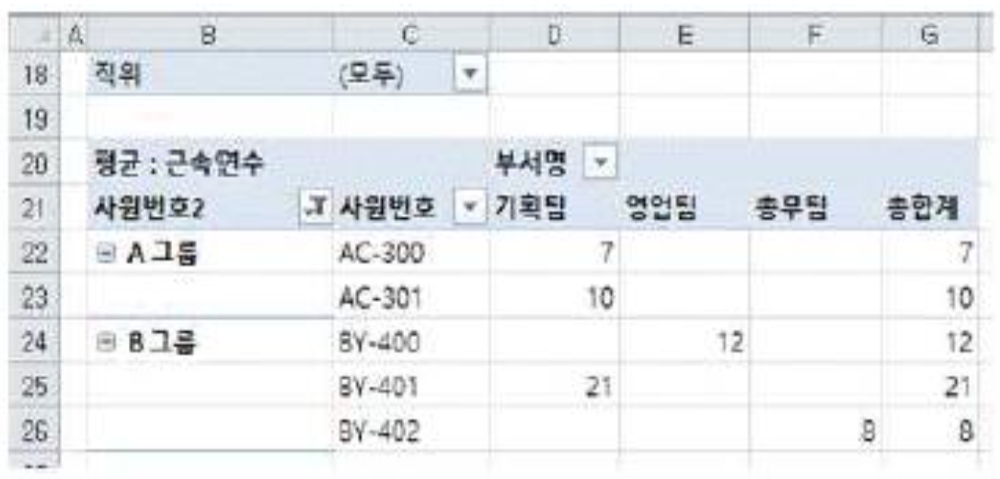
피벗 테이블에서 그룹화 기능을 사용하면 기본적으로 "그룹1", "그룹2"와 같은 이름이 자동으로 부여됩니다. 문제 화면처럼 'A 그룹', 'B 그룹'이라는 의미 있는 이름이 표시되어 있다면 이는 자동 생성된 이름이 아니라 사용자가 직접 변경한 이름입니다.
합격 포인트 !
피벗 테이블 그룹화: 사원번호, 날짜, 숫자 등 데이터를 묶어 요약할 수 있는 기능
그룹 이름 변경: 자동 생성된 "그룹1"을 더블 클릭하거나 직접 입력해 의미 있는 이름으로 바꿀 수 있음
암기 팁: 한글로 깔끔하게 정리된 그룹 이름이 보이면 "사용자가 직접 입력한 것!"
중첩 부분합은 이미 만들어 둔 부분합 결과 위에 다른 함수의 부분합을 "추가"하는 것입니다. 이때 '새로운 값으로 대치' 항목을 체크하면 기존 부분합이 새 결과로 덮어 써지므로, 중첩 부분합을 만들 때는 반드시 이 항목의 체크를 "해제"해야 합니다.
합격 포인트 !
중첩 부분합: 합계 → 평균 → 최댓값처럼 여러 함수를 동시에 적용하고 싶을 때 사용
필수 체크 해제 항목: '새로운 값으로 대치' (체크하면 기존 부분합이 사라짐)
암기 팁: "중첩"이라는 단어가 보이면 "대치 체크는 무조건 해제!"
엑셀의 '날짜필터' 메뉴에서는 "오늘", "이번 주", "지난 달" 등 날짜 단위로만 필터링이 가능하며, 월요일·화요일 같은 요일 단위로는 직접 필터링할 수 없습니다. 요일별로 필터링하려면 WEEKDAY 함수 등을 이용해 요일을 별도 열에 추출한 뒤 그 열을 기준으로 필터링해야 합니다.
합격 포인트 !
자동 필터: 한 시트의 한 영역에만 적용 가능, 같은 필드 조건은 OR, 다른 필드 조건은 AND
날짜 필터 옵션: 오늘/내일/지난 주/이번 달/연도별 등 — 요일은 직접 지원 안 함
색상 필터: 글꼴 색이나 채우기 색이 적용된 셀을 기준으로 필터링 가능
암기 팁: "요일로 필터링" → 함수(WEEKDAY)로 별도 컬럼 만들기 필요!
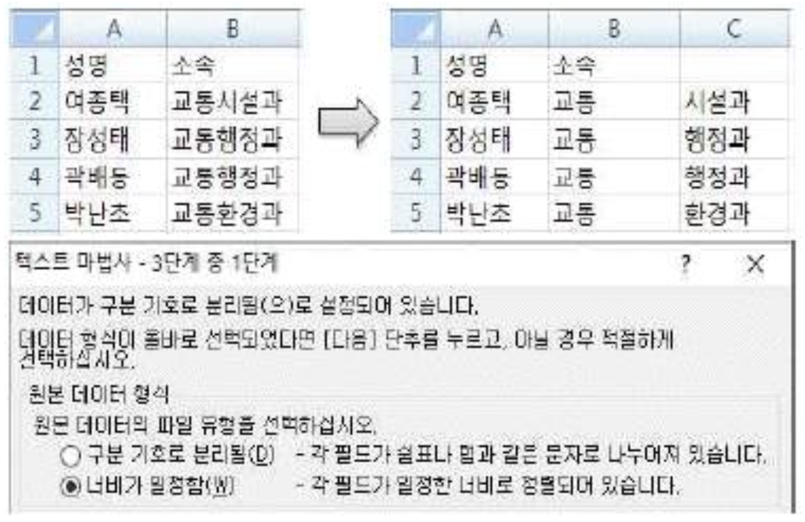
텍스트 나누기 마법사에서 "너비가 일정함" 옵션을 선택하면 구분선을 직접 삽입할 수 있는데, 한 번에 삽입할 수 있는 구분선의 개수에는 한계가 있으며 무제한이 아닙니다. 따라서 "개수에 제한이 없다"고 한 ②번이 옳지 않은 설명입니다.
합격 포인트 !
텍스트 나누기 마법사 사용법: 데이터 → 텍스트 나누기 → 구분 기호 또는 너비 일정 선택
구분선 조작: 클릭 → 추가 / 더블 클릭 → 삭제 / 드래그 → 이동
암기 팁: 엑셀 기능에서 "개수 제한이 없다"는 표현은 거의 함정!
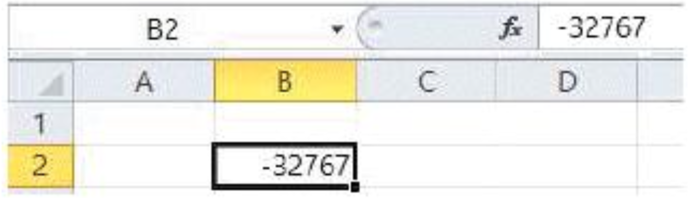
표시 형식 '$#,##0;($#,##0)'은 세미콜론(;)을 기준으로 두 영역으로 나뉩니다. 앞부분은 양수일 때 표시 형식이고, 뒷부분은 음수일 때 표시 형식입니다. [B2] 셀 값이 음수이므로 뒷부분 '($#,##0)' 형식이 적용되어 "($32,767)"로 표시됩니다.
합격 포인트 !
사용자 지정 표시 형식 구조: 양수;음수;0(영);텍스트
음수에 괄호를 두르면 자동으로 마이너스 부호(-)는 표시되지 않습니다.
암기 팁: 세미콜론(;) 뒤쪽은 무조건 음수용! 괄호가 있으면 음수에 자동 적용.
일정 범위에 동일한 데이터를 한 번에 입력하려면 ＜Shift＞+＜Enter＞가 아니라 ＜Ctrl＞+＜Enter＞를 사용해야 합니다. ＜Shift＞+＜Enter＞는 단순히 셀 입력 후 위쪽 셀로 이동하는 단축키일 뿐입니다.
합격 포인트 !
＜Ctrl＞+＜Enter＞: 선택한 범위 전체에 동일한 값 일괄 입력
＜Alt＞+＜Enter＞: 한 셀 안에서 줄 바꿈
＜Shift＞+＜Enter＞: 입력 후 위쪽 셀로 이동
암기 팁: "한 번에 일괄 입력" 키워드는 무조건 Ctrl+Enter!
엑셀은 날짜를 내부적으로 일련번호로 저장합니다. 기준은 1900년 1월 1일을 1로 두고, 하루씩 더해 나가는 방식입니다. (예: 1900-01-02 = 2) 이런 방식 덕분에 날짜 간 뺄셈으로 일수를 계산할 수 있습니다.
합격 포인트 !
② 날짜 구분자는 슬래시(/)나 하이픈(-)만 가능하며, 점(.)은 사용 불가합니다.
③ 수식에서 날짜를 직접 입력할 때는 큰따옴표(" ")로 묶어야 합니다.
④ 오늘 날짜 입력 단축키는 ＜Ctrl＞+＜;＞이며, Alt는 포함되지 않습니다.
암기 팁: 오늘 날짜 = Ctrl+; / 현재 시간 = Ctrl+Shift+;
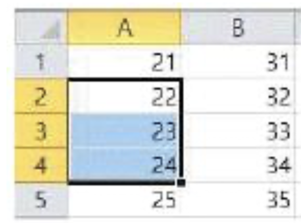
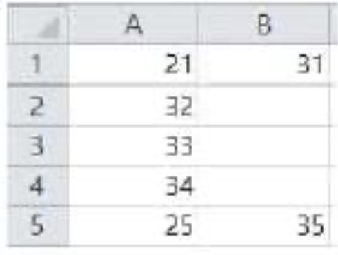
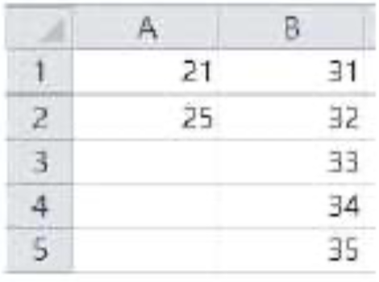
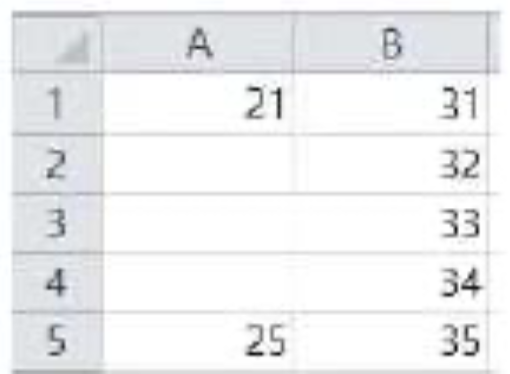
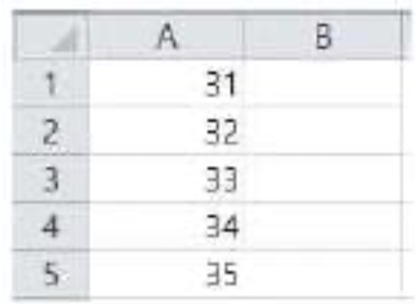
엑셀에서 [삭제] 대화상자의 옵션은 "셀을 왼쪽으로 밀기", "셀을 위로 밀기", "행 전체", "열 전체"의 네 가지입니다. ③번 이미지는 이 네 가지 옵션 중 어느 것으로도 만들어질 수 없는 결과이므로, 삭제 옵션을 통해서는 실행 결과로 나올 수 없습니다.
합격 포인트 !
[삭제] 대화상자 옵션 4가지: 셀을 왼쪽으로 밀기 / 셀을 위로 밀기 / 행 전체 / 열 전체
삭제는 셀 자체를 없애는 것이고, Delete 키는 셀 안의 데이터만 지웁니다.
암기 팁: 삭제 방향은 "왼쪽·위·행·열" 네 가지 뿐!
매크로를 기록할 때 리본 메뉴를 탭으로 이동하면서 클릭하는 "탐색 동작"은 기록되지 않습니다. 실제로 셀에 입력하거나 명령을 실행하는 등 결과를 만들어 내는 동작만 기록됩니다.
합격 포인트 !
매크로 이름 규칙: 문자(영어·한글)로 시작, 공백·특수문자(!, @, $ 등) 사용 불가, 셀 주소 사용 불가
매크로 실행 방법: 단축키, 빠른 실행 도구 모음, 그래픽 개체 클릭, 매크로 대화상자 등
암기 팁: "리본 메뉴 탐색"은 기록 X, "실제 결과를 만드는 동작"만 기록 O!
엑셀 프로그램 전체는 그대로 두고 현재 열린 통합 문서만 닫으려면 'Workbooks.Close' 메서드를 사용합니다. ②번 'Application.Quit'은 엑셀 프로그램 자체를 종료하는 메서드이므로 원하는 동작과 다릅니다. ①, ④번은 존재하지 않거나 잘못된 형식의 메서드입니다.
합격 포인트 !
Application.Quit: 엑셀 프로그램 종료 (모든 통합 문서 닫힘)
Workbooks.Close: 모든 통합 문서 닫기 (엑셀은 그대로)
ActiveWorkbook.Close: 현재 활성 통합 문서만 닫기
암기 팁: "문서만 닫기" = Close, "엑셀 종료" = Quit
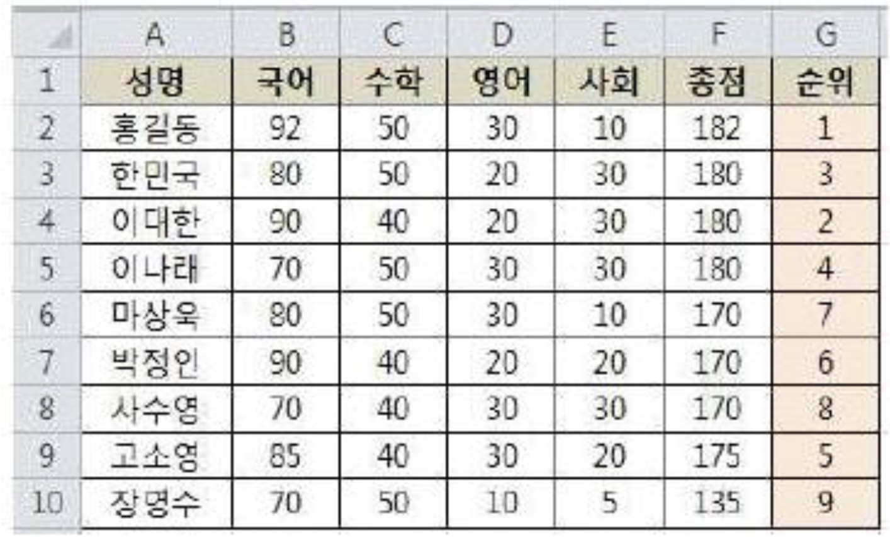
총점(F열)을 기준으로 RANK로 순위를 매긴 다음, 동점자가 있다면 그 동점자들 중에서 국어(B열) 점수가 본인보다 더 높은 사람의 수를 세어서 더해 주면 됩니다. ③번은 RANK($F2,$F$2:$F$10) 부분에서 총점 순위를 구하고, SUM(($F$2:$F$10=$F2)*($B$2:$B$10＞$B2)) 부분에서 "총점이 같으면서 국어가 더 높은 사람의 수"를 세어 더해 줍니다. 이렇게 하면 동점자 처리가 완벽하게 됩니다.
합격 포인트 !
동점자 처리 공식: =RANK(점수, 범위) + SUM((점수범위=본인점수)*(2차기준범위>본인2차점수))
배열 수식이므로 입력 후 ＜Ctrl＞+＜Shift＞+＜Enter＞로 마무리해야 합니다. (중괄호 { } 자동 표시)
암기 팁: 동점자 처리 = "기본 RANK + SUM으로 2차 기준 비교"
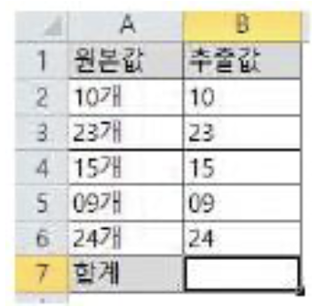
LEFT 함수의 결과는 텍스트(문자) 형식이므로, 그대로 더하면 합계가 계산되지 않습니다. 이때 텍스트를 숫자로 강제 변환하는 트릭으로 1*, --(이중 마이너스), VALUE 함수 등을 사용합니다. 그러나 ++(이중 플러스)는 엑셀에서 유효한 연산자가 아니므로 오류가 발생합니다.
합격 포인트 !
텍스트 → 숫자 변환 방법 4가지: 1*값, --값(이중 마이너스), +값, VALUE(값)
①, ②, ④번 모두 정상적으로 텍스트를 숫자로 변환해 합계를 계산합니다.
암기 팁: 이중 마이너스(--)는 OK, 이중 플러스(++)는 X — 외워 두세요!
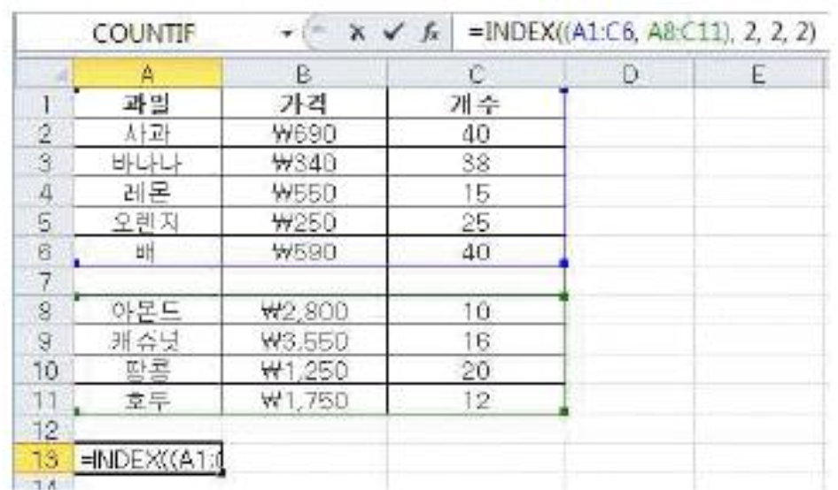
INDEX 함수에서 첫 번째 인수가 (A1:C6, A8:C11)처럼 괄호로 묶인 여러 영역일 때, 마지막 인수는 "몇 번째 영역인지"를 지정합니다. 수식 '=INDEX((A1:C6, A8:C11), 2, 2, 2)'은 두 번째 영역(A8:C11)에서 2행 2열(B9)의 값을 반환합니다. [B9] 셀의 값이 3,550이므로 결과는 3,550입니다.
합격 포인트 !
INDEX(영역묶음, 행, 열, [영역번호]): 영역이 여러 개일 때 마지막 인수로 어느 영역인지 지정
영역번호는 1부터 시작하며, 생략하면 첫 번째 영역이 자동 선택됩니다.
암기 팁: 마지막 숫자 2 = "두 번째 영역" → A8:C11에서 2행 2열을 찾는다!
각 보기의 결과를 계산해 보면 다음과 같습니다. ① ABS(INT(-3/2)) = ABS(INT(-1.5)) = ABS(-2) = 2 ② MOD(-3,2) = 1 (엑셀의 MOD는 결과의 부호가 제수와 같으므로 양수) ③ ROUNDUP(RAND(),0) = 1 (RAND는 0 이상 1 미만의 값, 올림하면 1) ④ FACT(1.9) = FACT(1) = 1 (FACT는 소수점 이하를 버리고 정수 부분만 사용) ①번만 결과가 2이고 나머지는 모두 1이므로 정답은 ①번입니다.
합격 포인트 !
INT: 음수에서는 "작은 쪽으로" 내림 → INT(-1.5) = -2
MOD(-3,2): 엑셀에서는 제수(2)의 부호를 따라 결과가 양수가 됨 → 1
ROUNDUP: 0 초과의 값은 무조건 올림 → RAND 결과(0~1) 올림 = 1
FACT: 소수점 이하 버리고 계산 → FACT(1.9) = FACT(1) = 1
암기 팁: INT의 음수 처리("더 작은 값으로")가 시험에 자주 나옵니다!
리본 메뉴 최소화 단축키는 ＜Ctrl＞+＜F1＞입니다. ②번의 ＜Alt＞+＜F1＞은 선택한 데이터를 기반으로 기본 차트를 현재 시트에 빠르게 만들어 주는 단축키이므로 리본 메뉴 최소화와는 관련이 없습니다.
합격 포인트 !
리본 메뉴 최소화: 단축키 ＜Ctrl＞+＜F1＞, 활성 탭 더블 클릭, 우측 상단 화살표 버튼
＜Alt＞+＜F1＞: 현재 시트에 기본 차트 만들기
＜F11＞: 새 차트 시트에 기본 차트 만들기
암기 팁: "Ctrl+F1 = 리본 접기", "Alt+F1 = 차트 만들기" 헷갈리지 않도록!
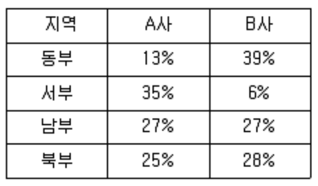
주식형 차트는 시가, 고가, 저가, 종가처럼 정해진 순서와 항목 수를 가진 데이터로만 작성할 수 있습니다. 문제의 데이터는 주식형 차트가 요구하는 데이터 구조를 갖추고 있지 않으므로 작성할 수 없습니다. 분산형, 도넛형, 영역형 차트는 일반적인 숫자 데이터로 자유롭게 만들 수 있습니다.
합격 포인트 !
주식형 차트 종류: 고가-저가-종가 / 시가-고가-저가-종가 / 거래량-고가-저가-종가 / 거래량-시가-고가-저가-종가
→ 데이터 계열 순서와 개수가 반드시 정해져 있음!
암기 팁: "주식형"은 데이터 구조가 까다로움 → 보기에 있으면 함정일 가능성 큼!
자동 복구된 파일의 이전 버전을 확인하는 위치는 [검토] 탭이 아니라 [파일] 탭의 [정보]-[버전 관리]입니다. [검토] 탭은 맞춤법 검사, 주석, 통합 문서 보호 등의 기능을 모아 둔 탭이므로 파일 버전 관리와는 무관합니다.
합격 포인트 !
버전 관리 위치: [파일] 탭 → [정보] → [통합 문서 관리]
자동 복구 주기: 기본 10분, [Excel 옵션]-[저장]에서 변경 가능 (1~120분)
백업 파일 확장자: .xlk (원본과 같은 폴더에 자동 생성)
암기 팁: 파일 관련 기능은 거의 모두 [파일] 탭에 있습니다!
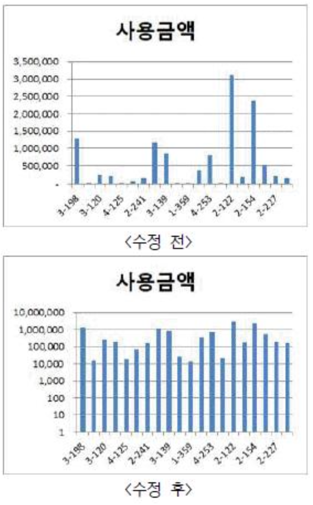
수정 후 차트는 세로 축의 눈금이 1, 10, 100, 1000처럼 10의 거듭제곱 간격으로 표시되는 형태입니다. 이는 [축 서식]에서 '로그 눈금간격'을 체크하고 기준을 10으로 설정해야 만들 수 있습니다. 값의 차이가 매우 큰 데이터를 한 차트에 표시할 때 유용한 옵션입니다.
합격 포인트 !
로그 눈금간격: 매우 큰 값과 매우 작은 값을 한눈에 볼 수 있도록 비율을 압축해 표시
값을 거꾸로: 축 방향을 반대로 뒤집어 표시 (큰 값이 아래로)
표시 단위: 1,000 / 10,000 / 1,000,000 등 큰 숫자를 간략히 표시
암기 팁: 눈금이 1, 10, 100, 1000 식으로 뛰면 무조건 "로그 눈금간격"!
인쇄 미리 보기 화면에서도 페이지 여백을 직접 변경할 수 있습니다. 오른쪽 아래의 '여백 표시' 아이콘을 클릭하면 화면에 여백 선이 나타나고, 이 선을 마우스로 드래그해 여백을 바로 조정할 수 있습니다. 따라서 "[페이지 설정] 대화상자에서만 설정할 수 있다"고 한 ③번이 옳지 않습니다.
합격 포인트 !
인쇄 미리 보기에서 가능한 작업: 여백 조정, 용지 방향 전환, 인쇄 대상 변경(선택/활성/전체)
여백 설정 방법: ① [페이지 레이아웃] 탭의 여백 ② [페이지 설정] 대화상자 ③ 인쇄 미리 보기에서 직접 드래그
암기 팁: "~에서만 가능하다"는 표현은 거의 함정! 다른 경로가 있는 경우가 대부분입니다.
인쇄 영역은 "같은 시트 안에서만" 여러 영역을 추가하여 설정할 수 있습니다. 서로 다른 시트의 영역을 묶어 하나의 인쇄 영역으로 설정하는 것은 불가능합니다. 따라서 "여러 시트에서 원하는 영역을 추가"한다는 ③번 설명은 옳지 않습니다.
합격 포인트 !
인쇄 영역 설정 경로: [페이지 레이아웃] 탭 → 인쇄 영역 / [페이지 설정] 대화상자 → [시트] 탭
같은 시트 내 여러 영역 추가는 가능 → 각 영역이 별도 페이지로 인쇄됨
암기 팁: 인쇄 영역은 "한 시트 안에서만!" 시트를 넘어가는 인쇄 영역은 없습니다.
Access의 매크로는 하나의 매크로 안에 여러 개의 하위 매크로(Submacro)를 포함할 수 있습니다. 하위 매크로를 사용하면 관련 있는 매크로들을 그룹으로 묶어 관리하기 편하다는 장점이 있습니다. 따라서 "하위 매크로를 포함할 수 없다"는 ④번 설명은 옳지 않습니다.
합격 포인트 !
Access 매크로: 데이터베이스 작업을 자동화하는 도구, 하위 매크로 포함 가능
단계 실행: 매크로의 흐름과 동작 정보를 한 단계씩 확인 가능 (디버깅에 유용)
매크로 그룹: 여러 매크로를 묶어 관리할 수 있는 기능
암기 팁: 보기에서 "~할 수 없다"는 단정적 표현은 거의 함정!
이벤트 프로시저의 DoCmd.OpenForm은 [사원정보] 폼을 여는 명령이고, DoCmd.GoToRecord ,, acNewRec는 새 레코드 위치로 이동하라는 명령입니다. 따라서 단추를 클릭하면 [사원정보] 폼이 열린 뒤, 새 레코드를 입력할 수 있도록 모든 필드가 비워진 상태로 표시됩니다.
합격 포인트 !
DoCmd.OpenForm "폼이름": 지정한 폼 열기
DoCmd.GoToRecord 인수: acFirst(첫 행), acLast(마지막 행), acNext(다음), acPrevious(이전), acNewRec(새 레코드)
암기 팁: "acNewRec" = New Record → 새 레코드 입력 화면!
데이터가 여러 곳에 중복되어 분산 저장되면 어느 한 곳을 수정했을 때 다른 곳도 함께 수정되어야 하는데, 이를 보장하기 어려워 오히려 데이터의 무결성을 유지하기 "어려워집니다." 따라서 "제어가 분산되어 무결성을 유지하기 쉬워진다"는 ④번 설명은 옳지 않습니다.
합격 포인트 !
데이터 중복성의 문제점: 일관성 손실 / 보안 비용 증가 / 갱신 비용 증가 / 무결성 유지 어려움
데이터베이스의 핵심 목표: 중복 최소화 → 무결성 보장
암기 팁: "중복은 무조건 나쁘다!" 중복의 장점을 말하면 함정입니다.
관계 데이터 모델에서 애트리뷰트(속성)는 기본 키로 설정된 경우를 제외하면 null 값을 가질 수 있습니다. 기본 키가 아닌 일반 속성은 값을 입력하지 않은 상태(null)도 허용됩니다. 따라서 "null 값을 가질 수 없다"는 ④번 설명은 옳지 않습니다.
합격 포인트 !
관계 데이터 모델 용어: 릴레이션(테이블) / 튜플(행) / 애트리뷰트(열) / 도메인(값의 범위)
튜플 순서: 없음 (집합 개념) / 애트리뷰트 순서: 없음 / 모든 튜플은 유일해야 함
Null 값: 기본 키 제외하고 허용 가능
암기 팁: "기본 키만 null 금지, 나머지는 OK!"
보고서나 폼 전체에 사용될 데이터의 출처(테이블 또는 쿼리)를 지정하는 속성은 "레코드 원본"입니다. 보고서 디자인 보기에서 [속성 시트]를 열어 [데이터] 탭의 [레코드 원본]에서 선택할 수 있습니다.
합격 포인트 !
레코드 원본: 폼·보고서 전체에 사용될 데이터의 출처 (테이블 또는 쿼리)
컨트롤 원본: 폼·보고서의 개별 컨트롤(텍스트 상자 등)에 표시할 필드 지정
암기 팁: "전체 보고서"는 레코드 원본, "낱개 컨트롤"은 컨트롤 원본!
Access 보고서에서 그룹화 기준은 한 개가 아니라 여러 개의 필드로 지정할 수 있습니다. 예를 들어 "부서별"로 먼저 묶고 그 안에서 다시 "직급별"로 묶는 식의 다중 그룹화가 가능합니다. 따라서 "한 개의 필드로만 지정"한다는 ④번 설명은 옳지 않습니다.
합격 포인트 !
그룹화 기준 필드: 여러 개 지정 가능 (최대 10개)
그룹별 영역: 그룹 머리글 / 본문 / 그룹 바닥글 → 요약·소계 표시에 활용
암기 팁: 보고서 그룹화는 "여러 개 가능", 한 개로만 제한된다는 설명은 함정!
COUNT(*)는 별표(*)를 사용하므로 "모든 레코드"를 세는 함수이며, Null 값을 포함한 모든 행을 카운트합니다. 또한 그룹 바닥글에 입력했으므로 "각 그룹별"로 계산됩니다. 정리하면 Null을 포함한 그룹별 레코드 개수가 결과로 출력됩니다.
합격 포인트 !
COUNT(*): 모든 레코드 카운트 (Null 포함)
COUNT(필드명): 해당 필드에 값이 있는 레코드만 카운트 (Null 제외)
위치별 집계 범위: 그룹 머리글/바닥글 → 그룹별 / 보고서 머리글/바닥글 → 전체
암기 팁: "별표(*)는 Null도 포함, 필드명은 Null 제외!"
보고서 머리글은 보고서 맨 앞에 한 번만 출력되는 구역이지만, 함수를 이용한 집계 정보(예: =SUM(필드), =COUNT(*))는 오히려 "표시할 수 있습니다." 전체 데이터에 대한 합계나 평균 같은 요약을 보고서 첫 페이지에 표시할 때 보고서 머리글을 자주 사용합니다. 따라서 "집계정보를 표시할 수 없다"는 ②번 설명은 옳지 않습니다.
합격 포인트 !
보고서 구역 종류: 보고서 머리글 / 페이지 머리글 / 그룹 머리글 / 본문 / 그룹 바닥글 / 페이지 바닥글 / 보고서 바닥글
보고서 머리글·바닥글: 전체 보고서에서 한 번 출력 → 전체 합계·평균 등 집계 표시에 적합
페이지 머리글·바닥글: 매 페이지마다 출력 → 페이지 번호·제목 등 반복 정보에 적합
암기 팁: 보고서 머리글/바닥글은 "집계 표시의 명당자리"!
정렬을 지정하는 SQL 예약어는 ORDER BY입니다. (GROUP BY는 그룹화에 사용합니다.) 그리고 정렬 방식은 내림차순이 DESC, 오름차순이 ASC입니다. 문제에서 학년은 내림차순(DESC), 반은 오름차순(ASC)으로 정렬하라고 했으므로 ORDER BY 학년 DESC, 반 ASC 형태가 됩니다.
합격 포인트 !
ORDER BY: 정렬 / GROUP BY: 그룹화
DESC: 내림차순(큰 값 → 작은 값) / ASC: 오름차순(작은 값 → 큰 값, 기본값)
여러 기준 정렬: ORDER BY 필드1 DESC, 필드2 ASC 처럼 콤마로 구분
암기 팁: ASC = Ascending(올라감), DESC = Descending(내려감)
크로스탭 쿼리(Crosstab Query)는 데이터를 행과 열 양쪽으로 그룹화한 뒤 교차하는 지점에 집계값을 표시해 주는 쿼리입니다. 마치 엑셀의 피벗 테이블처럼 "행 머리글 × 열 머리글 = 집계값" 형태의 보기 좋은 표를 만들어 줍니다.
합격 포인트 !
선택 쿼리: 조건에 맞는 데이터를 골라 보여주는 가장 기본적인 쿼리
크로스탭 쿼리: 행·열 양쪽으로 그룹화 + 집계 (피벗 테이블 형태)
통합(Union) 쿼리: 여러 SELECT 결과를 하나로 합치는 쿼리
업데이트 쿼리: 기존 데이터의 값을 수정하는 쿼리
암기 팁: "행과 열로 모두 그룹화" = 크로스탭!
문제의 SQL은 "UPDATE 학생 SET 주소='서울' WHERE 학번=100" 형태입니다. UPDATE는 기존 레코드의 값을 수정하는 명령이며, SET은 "바꿀 값", WHERE는 "바꿀 대상 조건"을 지정합니다. 따라서 "학번이 100인 레코드의 주소를 '서울'로 갱신한다"는 ③번이 정답입니다.
합격 포인트 !
SQL 명령어 4종: INSERT(추가) / SELECT(검색) / UPDATE(수정) / DELETE(삭제)
UPDATE 구조: UPDATE 테이블 SET 필드=값 WHERE 조건
SET 다음 = 바꿀 값, WHERE 다음 = 바꿀 대상 조건
암기 팁: "SET = 무엇을 바꿀까", "WHERE = 어디를 바꿀까"!
Access에서 날짜 데이터는 큰따옴표(" ")가 아니라 우물 정 기호(#)로 묶어야 합니다. 올바른 형식은 ＜#2019-07-17# 입니다. 따옴표로 날짜를 묶으면 텍스트로 인식되어 비교가 제대로 이루어지지 않습니다.
합격 포인트 !
데이터 형식별 묶음 기호: 숫자(그냥 입력) / 문자("") / 날짜(#)
비교 연산자: >, <, >=, <=, =, <>(같지 않음)
특수 연산자: In(목록 중 하나) / Between A And B / Like(패턴) / Is Null
암기 팁: "날짜는 우물(#)에서 퍼올린다!"
내부 조인(Inner Join)은 두 테이블에서 조인 조건을 만족하는, 즉 양쪽 테이블 모두에 존재하는 레코드만 결과로 보여주는 조인 방식입니다. 가장 기본적인 조인 형태이며, 한쪽에만 존재하는 데이터는 결과에서 제외됩니다.
합격 포인트 !
내부 조인(Inner Join): 양쪽 모두에 일치하는 행만 표시
외부 조인(Outer Join): 일치하지 않는 행도 포함 (왼쪽/오른쪽/완전 외부)
암기 팁: "일치하는 것만" = 내부 조인, "일치하지 않아도 포함" = 외부 조인!
관계가 설정되어 있는 테이블에서는 기본 키를 곧바로 해제할 수 없습니다. 먼저 해당 관계를 삭제한 뒤에야 기본 키 설정 해제가 가능합니다. 따라서 "기본 키를 해제하면 관계도 자동으로 삭제된다"는 ④번 설명은 옳지 않습니다.
합격 포인트 !
기본 키 특징: Null 불가, 중복 불가(고유), 테이블당 하나만 설정
관계 설정된 테이블: 기본 키 해제 전에 반드시 관계부터 삭제해야 함
암기 팁: "관계 먼저 끊고 기본 키 해제!" 순서가 중요합니다.
일련 번호 형식 필드의 크기는 "정수(Long)" 또는 "복제 ID" 중에서 변경할 수 있습니다. 따라서 "필드 크기를 변경할 수 없다"는 ④번 설명은 옳지 않습니다.
합격 포인트 !
일련 번호 특징: 자동 부여, 직접 수정 불가, 삭제된 번호는 재사용 X
필드 크기 선택: 정수(Long) 또는 복제 ID 중에서 변경 가능
암기 팁: 일련 번호는 "건너뛰는 자동 번호표" → 한 번 발급되면 끝!
텍스트 상자는 필드와 연결해 사용하는 바운드 컨트롤뿐만 아니라, 필드와 연결하지 않고 계산식이나 안내 문구를 표시하는 언바운드 컨트롤로도 사용할 수 있습니다. 따라서 "언바운드 컨트롤로는 사용할 수 없다"는 ②번 설명은 옳지 않습니다.
합격 포인트 !
컨트롤 종류: 바운드(필드 연결) / 언바운드(연결 X) / 계산 컨트롤(수식 사용)
텍스트 상자: 세 가지 유형 모두로 사용 가능 (가장 다재다능한 컨트롤)
레이블: 항상 언바운드 (단순 텍스트 표시용)
암기 팁: 텍스트 상자는 "바운드, 언바운드, 계산" 셋 다 OK!
필드의 실제 이름은 그대로 두면서 화면에 보이는 이름만 다르게 표시하고 싶을 때 사용하는 속성이 "캡션(Caption)"입니다. S_Number 필드의 캡션을 '학번'으로 설정하면, 데이터시트 보기와 폼·보고서의 레이블에 '학번'으로 표시됩니다.
합격 포인트 !
캡션: 데이터시트·폼·보고서에 표시될 "별칭" 설정 (실제 필드명은 그대로)
형식: 값의 표시 형태 지정 (날짜 형식, 통화 형식 등)
입력 마스크: 데이터 입력 시 정해진 패턴 강제 (예: 전화번호 000-0000-0000)
암기 팁: "화면에 보이는 별명" = 캡션!
특정 컨트롤에 Tab 키로 포커스가 이동하지 않게 하려면 [속성 시트]의 [기타] 탭에서 "탭 정지" 속성을 "아니오"로 설정하면 됩니다. 탭 정지를 "아니오"로 두면 Tab 키를 누를 때 해당 컨트롤은 건너뛰고 다음 컨트롤로 포커스가 이동합니다.
합격 포인트 !
탭 정지: 예 → Tab 키로 포커스 받음 / 아니오 → 건너뜀
탭 인덱스: Tab 키 이동 순서 (0부터 시작)
암기 팁: "건너뛰기" = 탭 정지 "아니오", 순서 변경 = 탭 인덱스!
폼에 컨트롤을 삽입하면 탭 순서는 컨트롤이 "추가된 순서"대로 자동 지정됩니다. 위에서 아래, 왼쪽에서 오른쪽 순서가 아니므로, 컨트롤을 위치와 다르게 추가하면 탭 순서가 뒤죽박죽이 될 수 있습니다. 이런 경우 [탭 순서] 대화상자에서 "자동 순서" 버튼을 눌러 위치에 맞게 재정렬해야 합니다.
합격 포인트 !
탭 순서: 컨트롤을 "추가한 순서"대로 지정 (위치와 무관)
자동 순서 정렬: [탭 순서] 대화상자에서 [자동 순서] 버튼 클릭 → 위치 기준으로 재정렬
암기 팁: "추가 순서대로 탭 진행" → 위치 기준으로 정렬하려면 별도 작업 필요!
폼은 데이터와 연결 여부에 따라 "바운드 폼"과 "언바운드 폼"으로 나뉩니다. 테이블·쿼리와 연결된 폼은 바운드 폼이지만, 단순히 메뉴나 안내 화면처럼 데이터와 연결되지 않은 언바운드 폼도 만들 수 있습니다. 따라서 "모든 폼은 바운드 폼"이라는 ①번 설명은 옳지 않습니다.
합격 포인트 !
바운드 폼: 테이블·쿼리와 연결되어 데이터를 표시·편집
언바운드 폼: 데이터 연결 없이 메뉴, 시작 화면, 안내 화면 등으로 사용
암기 팁: "모든 폼이 ~이다"는 표현은 거의 함정! 항상 예외가 있습니다.